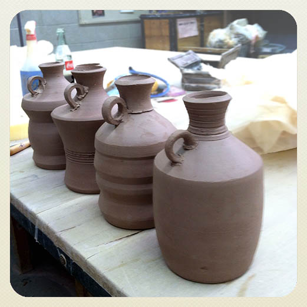

All the Ram Fam wares are made by Carlos Ramirez. He uses Stoneware clay and fires to cone 10 in a reduction atmosphere. All the clay and glazes are made in-house and all the glazes are food safe.
Each jug in the Bootlegger Series is approximately 6"H x 4"W although sizes vary within an inch or so as each jug is individually handmade.